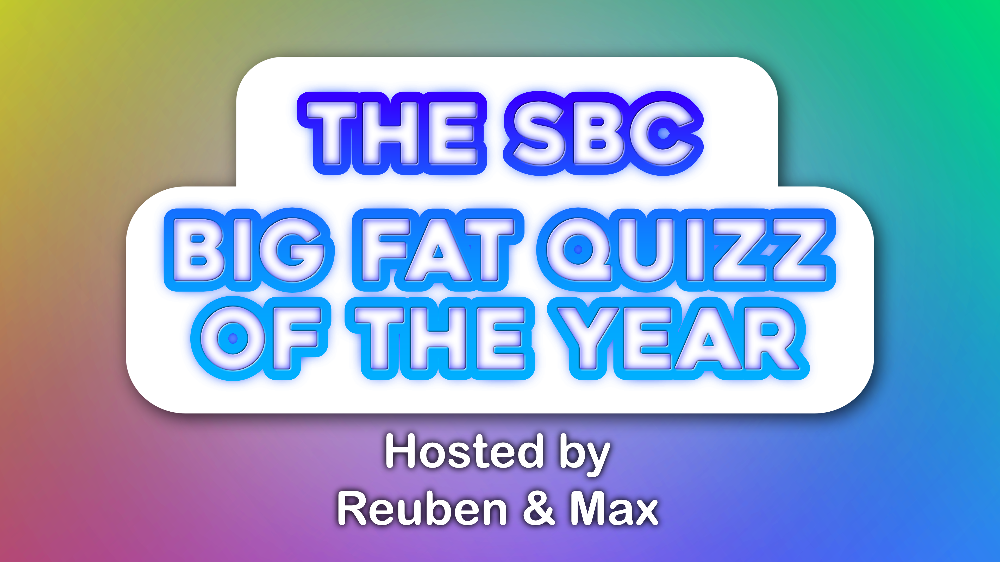

First we start of with a recap of the year, going over subject of pop culture relevancy without leaning too political. We will also talk about topics that we think the youth will be familiar with or have heard of.
Some notable moments from this year include:
The lamb that got caught in a police drugs bust In Scotland, police found a lamb called Pablo eating chips in the back of a car during a drugs investigation. The lamb was eventually returned safely to its farm. Quiz question: What was the lamb called?
A mayor chosen by a coin toss
In a Peruvian village, two candidates received exactly the same number of votes. Rather than endless recounts, they decided the winner with a coin toss! Quiz question: How was the tied election decided?
I wouldn't have a full political round, but a few of these would be brilliant. - Donald Trump declaring his redecorated Oval Office a historic landmark. - Trump calling Norway a rather rude name, only for Norway's tourism board to respond by advertising its beautiful public toilets! - A giant effigy of FIFA president Gianni Infantino appearing in the news in November.
Possible question: Which country responded to Trump's insult about its toilets by turning it into a tourism advert? Answer: Norway.
some other rounds we could do, include:
Guess the Headline (Show a bizarre headline and give four possible endings)
Who am I ? (name the photo of the celebrity)
google searches (Guess the most searched people or topics)
finish the lyrics (play a snippet of a song and ask the contestants to finish the lyrics)
This is a game show where contestants tell stories and the other team has to guess if they are true or false. I think this would be a great addition to the quiz, as it would give the contestants a chance to be creative and have fun with their stories. It would also give the audience a chance to learn more about the contestants and their personalities.
I think we could have two rounds of this, with each team taking turns telling their stories. where on the last round we get the audience to vote on which story they think is true or false. This would add an extra layer of excitement and engagement to the game, as the audience would be actively involved in the outcome.
Overall, I think this would be a great addition to the quiz and would make it even more fun and entertaining for everyone involved.
I think we could have two team captains, one for each team. Tell us (Max & Reuben) ahead of time, a funny story relating to an object which they will bring in. we will then create two extra stories which are lies. before the team captain goes up on stage with their prop, they will be given an envelope with one of the stories inside it, it could be their true one or a false one which we have picked and will only know uppon reading it. The teams would consist of one captain per team, and two youths per team if they want to do it.
After reading out what is written on the envelope, the opposing team will then have the oppurtunity to ask questions and try to poke holes in their story which the defending team will have to try and explain. We may do a third round depending on time where either Me (Max) or reuben will tell a story and get the audience to decide if its true or false.
Each round should only last about 5 - 10 minutes, maybe with the exception of the last round due to the audience engagement.